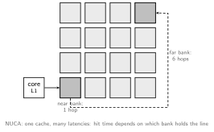

A multicore chip gives every core a private write-back cache
(Caches
and Virtual Memory), so the same memory block can live in several
places at once. Without intervention, core 1 can write
A = 43 in its own cache while core 2 spins forever on a
stale A == 42 in its cache. A cache coherence
protocol is the hardware that makes one core’s writes visible
to all others, restoring the illusion of a single shared memory.
Coherence is not directly visible to the programmer; it is the substrate
on which the
Memory
Model is enforced, and it is what makes the “shared memory” quadrant
of
MIMD
work at all.
The Primer’s definition (Sorin, Hill, Wood) is the cleanest: think of each memory block’s lifetime as divided into epochs.
Equivalently (token counting): a block has tokens; writing requires all of them, reading requires at least one. Every practical protocol is an invalidate protocol: to write, a core first invalidates every other copy, ending the current epoch and starting its own read-write epoch. (Update protocols, which broadcast new values into the other caches instead, cost far more bandwidth and make write atomicity in the Memory Model hard, so they are essentially extinct.) Coherence is enforced at cache-block granularity, typically 64 B, which is exactly what creates false sharing below.
Token Coherence turned the counting framing into a real protocol family: tokens travel with the data, so correctness needs no bus order and no directory serialization, giving broadcast performance on any unordered network, with a slow “retry with priority” path for the rare races.
A block’s state in a private cache encodes four independent properties: validity, dirtiness (differs from the copy in LLC/memory, this cache must eventually write it back), exclusivity (only cached copy in the system), and ownership (this cache, not memory, must respond to requests for the block). The classic states (Sweazey & Smith):
| State | valid | dirty | exclusive | owner | Meaning |
|---|---|---|---|---|---|
| Modified | yes | yes | yes | yes | read-write; only valid copy; memory stale |
| Owned | yes | yes | no | yes | read-only, but this cache supplies data; sharers may exist |
| Exclusive | yes | no | yes | yes | read-only, clean, no other copies |
| Shared | yes | no | no | no | read-only; others may share |
| Invalid | no | no usable copy |
MSI is the minimal correct protocol. The two optional states each optimize one common pattern:
The state diagram for MSI, with each edge labeled processor event / bus transaction issued:
The bus transactions are common to nearly all protocols: GetS (obtain read-only copy), GetM (obtain read-write copy, invalidating others), Upg (upgrade S to M without a data transfer), and PutM/PutO (evict a dirty or owned block, writing it back). Evictions from S or E are usually silent, since non-owned blocks can vanish without telling anyone.
Transient states. The clean FSM above is a lie at implementation time: between issuing GetM and receiving data plus acknowledgments, a block is neither I nor M. Real protocols add transient states written , “was X, becoming Y, waiting for Z”: e.g. (invalid, going to M, awaiting Data), (shared, going to M, awaiting Acks). A production protocol has a handful of stable states and dozens of transient ones, tracked in the cache’s MSHRs; this state explosion is why coherence protocols are specified as tables and model-checked rather than drawn as diagrams. Races between simultaneous requests to the same block (resolved by whichever is ordered first) are where all the design difficulty lives, along with protocol-level deadlock (avoided with separate virtual networks for requests and responses), livelock (a NACKed or invalidated-before-use requestor must retry and eventually win), and starvation.
In a snooping protocol, a cache controller broadcasts its request on a shared bus; every other cache’s snooper observes it and reacts: the owner supplies data, sharers invalidate on a GetM. The bus’s arbitration gives all controllers a total order of transactions, and that order does double duty:
A snooping transaction is always two hops: broadcast request, unicast response. Latency is low and the design is conceptually simple. The cost is that every cache must snoop every transaction, so bandwidth demand grows with core count and the shared bus becomes the bottleneck. Modern implementations replace the physical bus with a split-transaction or logically ordered interconnect (request phase and data response decoupled, data returning on an unordered network), which keeps snooping viable up to modest core counts but does not fix the fundamental broadcast scaling problem.
Directories restore scalability by replacing broadcast with unicast plus lookup. A directory at each block’s home node (typically banked with the LLC or memory controller) records the block’s global state: who owns it, and a sharer list of who holds copies. A request goes only to the home:
Transactions are ordered at the directory, not on a bus: racing requests to the same block are serialized in whatever order they arrive at the home, and the loser is queued, redirected, or NACKed. Since there is no global broadcast order, a requestor learns its request is serialized only through explicit ack messages, which is precisely the extra complexity paid for scalability. The interconnect can now be any point-to-point network (MIMD machines from tens of cores to whole racks: SGI Origin, AMD HyperTransport, Intel QPI/UPI, and every multi-socket server).
Directory storage is its own design axis. A full bit-vector (one bit per core per block) is exact but grows as ; alternatives trade precision for space:
Coherence composes hierarchically: a multi-level hierarchy runs coherence between L1s and the shared LLC, and a multi-socket system runs a second protocol (often directory) between chips, with each chip’s LLC acting as a single “cache” at the outer level. The inclusion policy of the LLC interacts directly with coherence:
| Policy | LLC contains | Coherence effect | Cost |
|---|---|---|---|
| Inclusive | superset of all L1s | LLC tags double as a snoop filter/directory: a miss in LLC means no L1 has it | duplicated capacity; LLC eviction must back-invalidate L1 copies |
| Exclusive | only blocks not in L1s | maximizes total capacity | needs a separate snoop filter; blocks swap between levels |
| Non-inclusive | no guarantee | middle ground | still needs sharer tracking |
Intel historically used inclusive LLCs (cheap coherence filtering), moving to non-inclusive as core counts made the duplicated capacity and back-invalidations too costly; AMD favors exclusive hierarchies with separate probe filters.
A many-megabyte LLC cannot be one array. It is dozens of banks on an on-chip network, and once latency depends on which bank you hit, the cache is NUCA (non-uniform cache access):

Sharing a LLC among cores also raises a fairness question. Plain LRU allocates capacity to whoever accesses most, not who benefits most: a streaming thread with no reuse can strip-mine the cache away from a neighbor that needed it. Cache partitioning fixes the incentive: divide the ways among cores, sized by measured benefit (utility-based partitioning tracks each core’s hit curve vs. allocated ways), or by a QoS floor. The standard measurement trick, set dueling, dedicates a few dozen sets to each competing policy and lets miss counters on those sets pick the winner for the rest of the cache.
Because the SWMR invariant is enforced per 64 B block, two cores writing different variables that happen to share a block fight over it as if they shared data:
struct { int a; int b; } counters; // same cache block
// core 0 loop: counters.a++; // GetM: invalidates core 1
// core 1 loop: counters.b++; // GetM: invalidates core 0Each increment bounces the block M-to-I between the two caches (a coherence miss, the 4th C beyond the 3Cs of Caches and Virtual Memory), costing a full cache-to-cache transfer per write with zero true communication. The software fix is padding/alignment so hot per-core data gets its own block; hardware mitigations (sub-block coherence state, speculating that an invalid block’s data is still usable) exist but are rare. The related migratory sharing pattern (read-then-write under a lock, block hopping core to core) is the opposite case: hardware can optimize it by predicting the write and granting exclusive access on the initial read, generalizing the E-state trick.
Coherence keeps caches invisible; what the programmer is actually promised about load/store ordering across cores is the consistency contract, covered in Memory Model.
Author: Sai Govardhan (saigov14@gmail.com)
Courses
Textbooks
Standards, Papers, and Wikipedia
MIT License
Copyright (c) 2025 Sai Govardhan (saigov14@gmail.com)
Permission is hereby granted, free of charge, to any person obtaining a copy
of this software and associated documentation files (the "Software"), to deal
in the Software without restriction, including without limitation the rights
to use, copy, modify, merge, publish, distribute, sublicense, and/or sell
copies of the Software, and to permit persons to whom the Software is
furnished to do so, subject to the following conditions:
The above copyright notice and this permission notice shall be included in all
copies or substantial portions of the Software.
THE SOFTWARE IS PROVIDED "AS IS", WITHOUT WARRANTY OF ANY KIND, EXPRESS OR
IMPLIED, INCLUDING BUT NOT LIMITED TO THE WARRANTIES OF MERCHANTABILITY,
FITNESS FOR A PARTICULAR PURPOSE AND NONINFRINGEMENT. IN NO EVENT SHALL THE
AUTHORS OR COPYRIGHT HOLDERS BE LIABLE FOR ANY CLAIM, DAMAGES OR OTHER
LIABILITY, WHETHER IN AN ACTION OF CONTRACT, TORT OR OTHERWISE, ARISING FROM,
OUT OF OR IN CONNECTION WITH THE SOFTWARE OR THE USE OR OTHER DEALINGS IN THE
SOFTWARE.